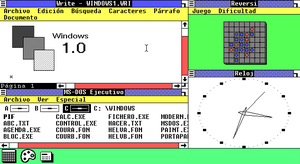

Les systèmes d'exploitations
Dans les années 1940, 1950, les systèmes d'exploitations n'existaient pas encore car les technologies n'étaient pas encore très évoluées. C'est dans les années 1960 que le besoin d'un environnement de travail plus avancé s'est fait ressentir.
Qu'est ce qu'un système d'exploitation ?
Également appelé OS pour operational system, c'est un environnement qui contient des logiciels fondamentaux et qui agit comme une interface entre l'utilisateur et l'hardware. Il sert à créer un environnement qui permet la gestion de processus, la gestion de la mémoire, la gestion de fichiers ou encore une sécurisation. Il est composé d'un kernel (noyau) qui gère les ressources physiques, de gestionnaires de fichiers ou encore d'interface utilisateur qui permettent au client de communiquer avec l'ordinateur notamment grâce à la ligne de commande (CLI) ou a des logiciels graphiques (GUI).
En 1969 apparait un des premier et le plus marquant des systèmes d'exploitation sous le nom d'Unix. En effet, ce systèmess d'exploitation libre de droit donc gratuit et open-source (le code source est accessible à tous) fait à partir du langage C est à la base d'une très grande partie des appareils éléctroniques d'aujourd'hui. Par exemple, les appareils iOS sont basé sur un kernel Unix tout comme plein d'autres objets qu'on appelle IoT (Internet of Thing) qui sont les objets électroniques du quotidien comme les caméras, les appareils réseau (routeurs) ou encore certaine voitures connectées.
Unix est utilisé partout mais à quel point est-il extensible ?
Dans les années 1990, Linus Torvalds créer un kernel basé sur le système d'exploitation Unix. Il l'appellera Linux. Ce noyau, plus tard utilisé par Android par exemple, dispose d'une très grande personnalisation étant donné qu'il est open-source. De nombreuse personnes ont donc créer des distributions qui sont des dérivées de Linux.
On y trouve premièrement les distributions Ubuntu qui sont réputées pour être faciles à prendre en main et conviviales. Ensuite, nous trouvons des distributions qui sont souvent utilisées pour héberger des serveurs internet comme par exemple Fedora Server. Il y a également des distributions orientées sécurité et pentesting telles que Kali Linux, Parrot OS ou encore Black Arch. Enfin, il y a des cas beaucoup plus spécifiques comme par exemple des systèmes d'exploitation qui permettent une confidentialité et anonymisation avancée comme le permet Tails.

Les systèmes d'exploitation basés sur Unix sont largement utilisés mais ce ne sont pas les seuls.
En effet, en 1985 apparait Windows qui est un système d'exploitation complet mais payant. Il est le système d'exploitation le plus utilisé pour les ordinateurs familiaux car il est vendu souvent avec les ordinateurs.
Les premières versions de windows remontent aux années 1985 avec Windows 1.0 qui est une extension de l'os MS-DOS. Windows 1.0 est le premier OS avec une interface graphique (GUI) de la famille Windows. Cette interface permettait de se balader dans les dossiers ou même d'avoir plusieurs programmes ouvert en même temps tel que Paint, un terminal ou encore Notepad.
Viendra ensuite les versions 2x, 3x et 9x qui sont plusieurs évolutions de Windows notamment dans la beauté, le design et les fonctionnalités. Cependant, ils sont toujours basés sur MS-DOS ce qui est un inconvéniants notamment pour la stabilité ou la gestion de mémoire limitée. C'est alors qu'apparait en 1993 la famille Windows NT qui sont des versions qui ne dépendent pas de MS-DOS mais d'une nouvelle architecture. Ces versions ont permis d'apporter de nouvelles fonctionnalités très importantes comme par exemple la possibilité d'avoir plusieurs utilisateurs sur la même machine, NTFS qui est un système de fichier très répandu ou encore l'interface de programmation Win32 qui permet de créer des applications sur windows.
Enfin, les version Windows XP, Vista suivi de Windows 7, 8 et 10 sont des versions de plus en plus modernes et convivial afin d'apporter une facilité d'utilisation pour tout type d'activité, allant du streaming sur internet jusqu'à la gestion de projet professionels complexes. Ces systèmes d'exploitations offrent une flexibilité étendu ce qui a donc causé son succès dans le monde entier.